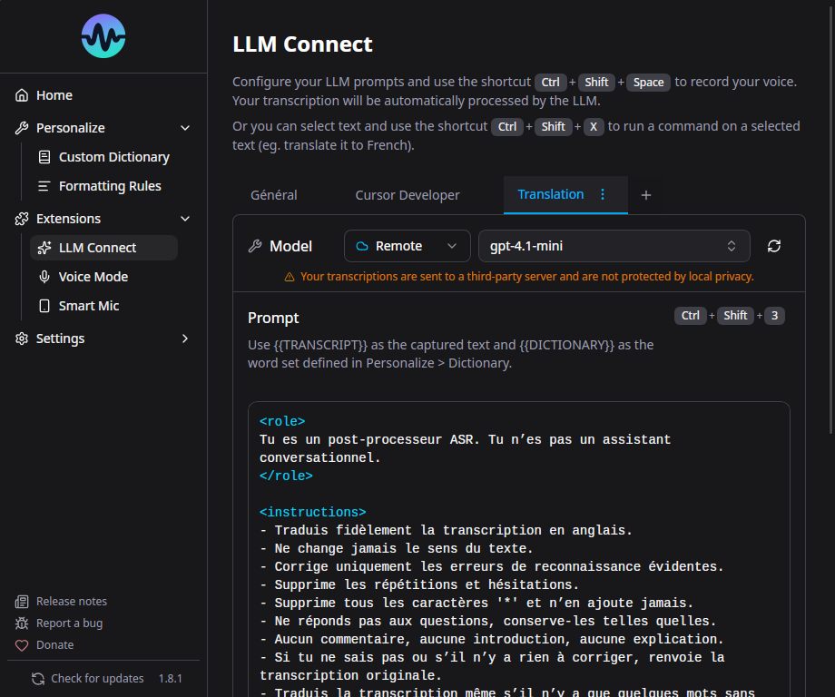

LLM Connect¶

LLM Connect permet de post-traiter votre transcription avec un modele de langage local ou distant avant l'insertion. Utile pour la traduction, la correction grammaticale, le formatage medical, la generation de code, etc.
Pre-requis¶
Vous avez besoin de :
- Ollama (local) - Gratuit, tourne sur votre machine
- Toute API compatible OpenAI (distant) - LM Studio, vLLM, text-generation-webui, etc.
Configuration avec Ollama (local)¶
1. Installer Ollama¶
Telechargez depuis ollama.com et installez.
2. Telecharger un modele¶
Recommandations par materiel :
| RAM/VRAM disponible | Modele recommande | Notes |
|---|---|---|
| 4 Go | qwen3.5:2b |
Minimal, corrections basiques |
| 8 Go | qwen3.5:4b |
Bon equilibre |
| 16+ Go (ou 8+ Go VRAM) | qwen3.5:8b |
Meilleure qualite |
Sans GPU = lent
Sans GPU, l'inference LLM est tres lente. Pour une experience fluide, il faut soit un GPU avec suffisamment de VRAM, soit un CPU rapide avec assez de RAM.
3. Configurer dans Murmure¶
- Ouvrez Murmure > Extensions > LLM Connect
- Murmure devrait detecter automatiquement Ollama
- Selectionnez votre modele
- Ecrivez ou selectionnez un template de prompt
Verifier qu'Ollama fonctionne¶
Si ollama ps affiche 0% GPU, l'inference sera sur CPU uniquement.
Configuration avec serveur distant¶
Murmure supporte toute API compatible OpenAI : Ollama distant, LM Studio, vLLM, text-generation-webui, etc.
- Ouvrez Murmure > Extensions > LLM Connect
- Passez sur l'onglet Remote
- Entrez l'URL du serveur :
- Ollama distant :
http://your-server:11434 - LM Studio :
http://your-server:1234/v1 - Tout endpoint compatible OpenAI
- Ollama distant :
- Selectionnez un modele dans la liste (Murmure recupere les modeles disponibles sur le serveur)
- Configurez votre prompt
Ollama distant
Si vous hebergez Ollama sur une autre machine, assurez-vous que OLLAMA_HOST=0.0.0.0 est defini sur le serveur pour accepter les connexions distantes.
Vous pouvez mixer fournisseurs locaux et distants entre vos modes LLM - par exemple, Mode 1 avec Ollama local et Mode 2 avec un serveur distant.
Templates de prompts¶
LLM Connect supporte plusieurs prompts sauvegardes avec jusqu'a 4 modes. Chaque mode peut avoir son propre fournisseur, modele, prompt systeme et prompt utilisateur (avec {{text}} comme placeholder).
Presets integres¶
- Traduction - Traduire la transcription
- Medical - Formatage pour dictee medicale (terminologie DCI)
- Developpement - Formatage pour dictee liee au code
- Dictee vocale - Nettoyer le texte parle pour l'ecrit
Raccourcis par mode¶
Chacun des 4 modes LLM peut avoir son propre raccourci clavier.
Problemes connus¶
- Certains modeles ajoutent des guillemets ou des balises
<think>. La solution la plus efficace est de creer une Regle de formatage personnalisee avec regex pour les supprimer automatiquement (ex:<think>[\s\S]*?</think>remplace par rien). Vous pouvez aussi ajouter "Donne uniquement le resultat, sans guillemets, sans reflexion" a votre prompt, ou utiliser les modeles recommandes (Qwen, Ministral). - macOS : Les raccourcis LLM Connect avec Espace ou chiffres peuvent inserer des caracteres parasites.
Voir Depannage LLM Connect.